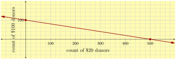
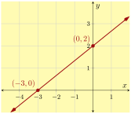
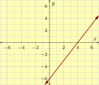
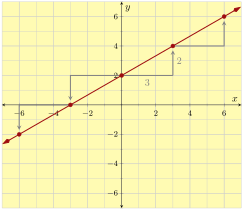
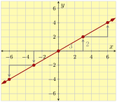

Section 3.7 Standard Form
We’ve seen that a linear relationship can be expressed with an equation in slope-intercept form or with an equation in point-slope form. There is a third form that you can use to write line equations. It’s known as “standard form”.
Subsection 3.7.1 Standard Form Definition
Imagine gathering donations to pay for a \(\$10{,}000\) medical procedure you cannot afford. Oversimplifying the mathematics a bit, suppose that there were only two types of donors in the world: those who will donate \(\$20\) and those who will donate \(\$100\text{.}\) How many of each, or what combination, do you need to reach the funding goal? That is, if \(x\) people donate \(\$20\) and \(y\) people donate \(\$100\text{,}\) what numbers could \(x\) and \(y\) be to meet your goal? The donors of the first type have collectively donated \(20x\) dollars, and the donors of the second type have collectively donated \(100y\text{.}\)
To reach \(\$10{,}000\text{,}\) altogether you’d need to have
\begin{equation*}
20x+100y=10000
\end{equation*}
This is an example of a line equation in standard form.
Definition 3.7.2. Standard Form.
It is always possible to write an equation for a line in the form
\begin{equation}
Ax+By=C\tag{3.7.1}
\end{equation}
where \(A\text{,}\) \(B\text{,}\) and \(C\) are three numbers (each of which might be \(0\text{,}\) although at least one of \(A\) and \(B\) must be nonzero). This form of a line equation is called standard form. In the context of an application, the meaning of \(A\text{,}\) \(B\text{,}\) and \(C\) depends on that context. This equation is called “standard” form perhaps because any line can be written this way, even vertical lines, which do not have slope and therefore cannot be written using slope-intercept or point-slope form.
Checkpoint 3.7.3.
For each of the following equations, identify what form they are in: slope-intercept, point-slope, standard, other linear, or not linear.
\(2.7x+3.4y=-82\)
\(y=\frac{2}{7}(x-3)+\frac{1}{10}\)
\(12x-3=y+2\)
\(y=x^2+5\)
\(x-y=10\)
\(y=4x+1\)
Explanation.
\(2.7x+3.4y=-82\) is in standard form, with \(A=2.7\text{,}\) \(B=3.4\text{,}\) and \(C=-82\text{.}\)
\(y=\frac{2}{7}(x-3)+\frac{1}{10}\) is in point-slope form, with slope \(\frac{2}{7}\text{,}\) and passing through \(\left(3,\frac{1}{10}\right)\text{.}\)
\(12x-3=y+2\) is linear, but not in any of the forms we have studied. Using algebra, you can rearrange it to read \(y=12x-5\text{.}\)
\(y=x^2+5\) is not linear. The exponent on \(x\) is a dead giveaway.
\(x-y=10\) is in standard form, with \(A=1\text{,}\) \(B=-1\text{,}\) and \(C=10\text{.}\)
\(y=4x+1\) is in slope-intercept form, with slope \(4\) and \(y\)-intercept at \((0,1)\text{.}\)
Returning to the example with donations for the medical procedure, let’s examine the equation
\begin{equation*}
20x+100y=10000\text{.}
\end{equation*}
What units are attached to each part of this equation? The \(10000\) is in dollars. Both \(x\) and \(y\) are numbers of people. Both the \(20\) and the \(100\) are in dollars per person. So the terms \(20x\) and \(100y\) are ultimately in dollars. Note how both sides of the equation are in dollars.
What is the slope of the linear relationship? It’s not immediately visible since \(m\) is not part of the standard form equation. But we can use algebra to isolate \(y\text{:}\)
\begin{align*}
20x+100y\amp=10000\\
100y\amp=\highlight{-20x}+10000\\
y\amp=\divideunder{-20x+10000}{100}\\
y\amp=\frac{-20x}{100}+\frac{10000}{100}\\
y\amp=-\frac{1}{5}x+100\text{.}
\end{align*}
And we see that the slope is \(-\frac{1}{5}\text{.}\)
What units are on that slope? As always, the units on slope are \(\frac{y\text{-unit}}{x\text{-unit}}\text{.}\) In this case that’s \(\frac{\text{person}}{\text{person}}\text{,}\) which sounds a little weird, but this slope of \(-\frac{1}{5}\frac{\text{person}}{\text{person}}\) is saying that for every 5 extra people who donate \(\$20\text{,}\) you need \(1\) fewer person donating \(\$100\) to still reach your goal.
What is the \(y\)-intercept? Since we’ve already converted the equation into slope-intercept form, we can see that it is at \((0,100)\text{.}\) This tells us that if \(0\) people donate \(\$20\text{,}\) then you will need \(100\) people donating \(\$100\) to meet the goal.
What does a graph for this line look like? We’ve already converted into slope-intercept form, and we could use that to make the graph. But when given a line in standard form, there is another approach that may be preferable. Returning to
\begin{equation*}
20x+100y=10000\text{,}
\end{equation*}
let’s calculate the \(y\)-intercept and the \(x\)-intercept from scratch. Recall that these are points where the line crosses the \(y\)-axis and \(x\)-axis. To be on the \(y\)-axis means that \(x=0\text{,}\) and to be on the \(x\)-axis means that \(y=0\text{.}\) All these “\(0\)”s make the resulting algebra easy to finish:
\begin{align*}
20x+100y\amp=10000\amp20x+100y\amp=10000\\
20(\substitute{0})+100y\amp=10000\amp20x+100(\substitute{0})\amp=10000\\
100y\amp=10000\amp20x\amp=10000\\
y\amp=\divideunder{10000}{100}\amp x\amp=\divideunder{10000}{20}\\
y\amp=100\amp x\amp=500
\end{align*}
So we have a \(y\)-intercept at \((0,100)\) and an \(x\)-intercept at \((500,0)\text{.}\) If we plot these, we get to mark especially relevant points given the context, and then drawing a straight line between them gives us Figure 4.

Subsection 3.7.2 The Importance of \(x\)- and \(y\)-Intercepts
With a linear relationship (and other types of equations too), we are often interested in the \(x\)-intercept and \(y\)-intercept because they have special meaning in context. For example, in Figure 4, the \(x\)-intercept implies that if no one donates \(\$100\text{,}\) you need \(500\) people to donate \(\$20\) to get us to \(\$10{,}000\text{.}\) And the \(y\)-intercept implies if no one donates \(\$20\text{,}\) you need \(100\) people to donate \(\$100\text{.}\) Let’s look at another example.
Example 3.7.5.
James owns a restaurant that uses about \(32\) lb of flour every day. He just purchased \(1200\) lb of flour. Model the amount of flour that remains \(x\) days later with a linear equation, and interpret the meaning of its \(x\)-intercept and \(y\)-intercept.
Since the rate of change is constant (\(-32\) lb every day), and we know the initial value, we can model the amount of flour at the restaurant with a slope-intercept form equation:
\begin{equation*}
y=-32x+1200
\end{equation*}
where \(x\) represents the number of days passed since the initial purchase, and \(y\) represents the amount of flour left (in lb).
A line’s \(x\)-intercept is on the \(x\)-axis, so its \(y\)-value must be \(0\text{.}\) To find this line’s \(x\)-intercept, we substitute \(y\) with \(0\text{,}\) and solve for \(x\text{:}\)
\begin{align*}
y\amp=-32x+1200\\
\substitute{0}\amp=-32x+1200\\
\highlight{-1200}\amp=-32x\\
\divideunder{-1200}{-32}\amp=x\\
37.5\amp=x
\end{align*}
So the line’s \(x\)-intercept is at \((37.5,0)\text{.}\) In context this means the flour would last for \(37.5\) days.
A line’s \(y\)-intercept is on the \(y\)-axis, so its \(x\)-value must be \(0\text{.}\) This line equation is already in slope-intercept form, so we simply recognize that its \(y\)-intercept is at \((0,1200)\text{.}\) In general though, we would substitute \(x\) with \(0\text{,}\) and we have:
\begin{align*}
y\amp=-32x+1200\\
y\amp=-32(\substitute{0})+1200\\
y\amp=1200
\end{align*}
So yes, the line’s \(y\)-intercept is at \((0,1200)\text{.}\) This means that when the flour was purchased, there was \(1200\) lb of it. In other words, the \(y\)-intercept tells us one of the original pieces of information: in the beginning, James purchased \(1200\) of flour.
The important thing is that both intercepts have relevant meaning in the context of the example. One was the initial amount of flour, and the other was how long until we would run out of flour.
If a line is in standard form, it may be easiest to graph it using its two intercepts.
Example 3.7.6.
Graph \(2x-3y=-6\) using its intercepts. And then use the intercepts to calculate the line’s slope.
Explanation.
To graph a line by its \(x\)-intercept and \(y\)-intercept, it might help to first set up a table like in Figure 7:
| \(x\)-value | \(y\)-value | Intercepts | |
| \(x\)-intercept | \(0\) | ||
| \(y\)-intercept | \(0\) |
A table like this might help you stay focused on searching for two points. As To find an \(x\)-intercept, \(y\) must be \(0\text{.}\) This is why we put \(0\) in the \(y\)-value cell of the \(x\)-intercept row. Similarly, a line’s \(y\)-intercept has \(x=0\text{,}\) and we put \(0\) into the \(x\)-value cell of the \(y\)-intercept row.
Next, we calculate the line’s \(x\)-intercept by substituting \(y=0\) into the equation
\begin{align*}
2x-3y\amp=-6\\
2x-3(\substitute{0})\amp=-6\\
2x\amp=-6\\
x\amp=-3
\end{align*}
So the line’s \(x\)-intercept is \((-3,0)\text{.}\)
Similarly, we substitute \(x=0\) into the equation to calculate the \(y\)-intercept:
\begin{align*}
2x-3y\amp=-6\\
2(\substitute{0})-3y\amp=-6\\
-3y\amp=-6\\
y\amp=2
\end{align*}
So the line’s \(y\)-intercept is \((0,2)\text{.}\)
| \(x\)-value | \(y\)-value | Intercepts | |
| \(x\)-intercept | \(-3\) | \(0\) | \((-3,0)\) |
| \(y\)-intercept | \(0\) | \(2\) | \((0,2)\) |
With both intercepts’ coordinates, we can graph the line:

There is a slope triangle from the \(x\)-intercept to the origin up to the \(y\)-intercept. It tells us that the slope is
\begin{equation*}
m=\frac{\Delta y}{\Delta x}=\frac{2}{3}\text{.}
\end{equation*}
This last example generalizes to a fact worth noting.
Fact 3.7.10.
If a line’s \(x\)-intercept is at \((r,0)\) and its \(y\)-intercept is at \((0,b)\text{,}\) then the slope of the line is \(-\frac{b}{r}\text{.}\) (Unless the line passes through the origin, in which case both \(r\) and \(b\) equal \(0\text{,}\) and then this fraction is undefined. And the slope of the line could be anything.)
Checkpoint 3.7.11.
Consider the line with equation \(2x+4.3y=\frac{1000}{99}\text{.}\)
(a)
What is its \(x\)-intercept?
Explanation.
To find the \(x\)-intercept:
\begin{equation*}
\begin{aligned}
2x+4.3y\amp=\frac{1000}{99}\\
2x+4.3(\substitute{0})\amp=\frac{1000}{99}\\
2x\amp=\frac{1000}{99}\\
x\amp=\frac{500}{99}
\end{aligned}
\end{equation*}
So the \(x\)-intercept is at \(\left(\frac{500}{99},0\right)\text{.}\)
(b)
What is its \(y\)-intercept?
Explanation.
To find the \(y\)-intercept:
\begin{equation*}
\begin{aligned}
2x+4.3y\amp=\frac{1000}{99}\\
2(\substitute{0})+4.3y\amp=\frac{1000}{99}\\
4.3y\amp=\frac{1000}{99}\\
y\amp=\multiplyleft{\frac{1}{4.3}}\frac{1000}{99}\\
y\amp\approx2.349\ldots
\end{aligned}
\end{equation*}
So the \(y\)-intercept is at about \((0,2.349)\text{.}\)
(c)
What is its slope?
Explanation.
Since we have the \(x\)- and \(y\)-intercepts, we can calculate the slope:
\begin{equation*}
m\approx-\frac{2.349}{\frac{500}{99}}=-\frac{2.349\cdot99}{500}\approx-0.4561
\text{.}
\end{equation*}
Checkpoint 3.7.12.
Consider the line with equation \(3x-2y=12\text{.}\) Graph the line by first finding its \(x\)- and \(y\)-intercepts.
Explanation.
To find the \(x\)-intercept:
\begin{equation*}
\begin{aligned}
3x-2y\amp=12\\
3x-2(\substitute{0})\amp=12\\
3x\amp=12\\
x\amp=4
\end{aligned}
\end{equation*}
So the \(x\)-intercept is at \(\left(4,0\right)\text{.}\)
To find the \(y\)-intercept:
\begin{equation*}
\begin{aligned}
3x-2y\amp=12\\
3(\substitute{0})-2y\amp=12\\
-2y\amp=12\\
y\amp=6\ldots
\end{aligned}
\end{equation*}
So the \(y\)-intercept is at about \((0,-6)\text{.}\)
So the graph is:

Subsection 3.7.3 Transforming between Standard Form and Slope-Intercept Form
Sometimes a linear equation arises in standard form, but it would be useful to see that equation in slope-intercept form. Or perhaps, vice versa.
Example 3.7.13.
Change \(2x-3y=-6\) to slope-intercept form, and then graph it. (This is the same equation from Example 6).
Explanation.
Since a line in slope-intercept form looks like \(y=\ldots\text{,}\) we will isolate \(y\text{:}\)
\begin{align*}
2x-3y\amp=-6\\
-3y\amp=-6\subtractright{2x}\\
-3y\amp=-2x-6\\
y\amp=\divideunder{-2x-6}{-3}\\
y\amp=\frac{-2x}{-3}-\frac{6}{-3}\\
y\amp=\frac{2}{3}x+2
\end{align*}
In the third line, we wrote \(-2x-6\) on the right side, instead of \(-6-2x\text{.}\) The only reason we did this is because we are headed to slope-intercept form, where the \(x\)-term is traditionally written first.
Now we can see that the slope is \(\frac{2}{3}\) and the \(y\)-intercept is at \((0,2)\text{.}\) With these things found, we can graph the line using slope triangles.
Compare this graphing method with the Graphing by Intercepts method in Example 6. We have more points in this graph, thus we can graph the line more accurately.

Example 3.7.15.
Graph \(2x-3y=0\text{.}\)
Explanation.
First, we will try (and fail) to graph this line using its \(x\)- and \(y\)-intercepts.
Trying to find the \(x\)-intercept:
\begin{align*}
2x-3y\amp=0\\
2x-3(\substitute{0})\amp=0\\
2x\amp=0\\
x\amp=0
\end{align*}
So the line’s \(x\)-intercept is at \((0,0)\text{,}\) at the origin. Hmm, the origin is also on the \(y\)-axis… So we’ve also found the \(y\)-intercept even though that was not the immediate goal.
Since both intercepts are the same point, there is no way to use the intercepts alone to graph this line. So what can be done?
One is to convert the line equation into slope-intercept form:
\begin{align*}
2x-3y\amp=0\\
-3y\amp=0\subtractright{2x}\\
-3y\amp=-2x\\
y\amp=\divideunder{-2x}{-3}\\
y\amp=\frac{2}{3}x
\end{align*}
So the line’s slope is \(\frac{2}{3}\text{,}\) and we can graph the line using slope triangles and the intercept at \((0,0)\text{,}\) as in Figure 16.

If \(C=0\) in a standard form equation, it’s convenient to graph it by first converting the equation to slope-intercept form.
Example 3.7.17.
Write the equation \(y=\frac{2}{3}x+2\) in standard form.
Explanation.
Once we subtract \(\frac{2}{3}x\) on both sides of the equation, we have
\begin{equation*}
-\frac{2}{3}x+y=2
\end{equation*}
Technically, this equation is already in standard form \(Ax+By=C\text{.}\) However, you might like to end up with an equation that has no fractions, so you could multiply each side by \(3\text{:}\)
\begin{align*}
\multiplyleft{3}\left(-\frac{2}{3}x+y\right)\amp=\multiplyleft{3}2\\
-2x+3y\amp=6
\end{align*}
Reading Questions 3.7.4 Reading Questions
1.
What kind of line has an equation in standard form, but cannot be written in slope-intercept form or point-slope form?
2.
What are some reasons why you might want to find the \(x\)- and \(y\)-intercepts of a line?
3.
What is not immediately apparent from standard form, that is immediately apparent from slope-intercept form and point-slope form?
Exercises 3.7.5 Exercises
Review and Warmup
Exercise Group.
Isolate \(y\) in the given equation.
1.
\({36x+4y}={44}\)
2.
\({-8x+4y}={4}\)
3.
\({-8x-8y}={-72}\)
4.
\({3x+9y}={81}\)
5.
\({66x+23y}={206}\)
6.
\({-24x-31y}={193}\)
Skills Practice
Slope and Intercepts.
Find both intercepts and the slope of the line.
7.
\({2x+1y}={8}\)
8.
\({6x+5y}={30}\)
9.
\({3x-5y}={15}\)
10.
\({-4x+3y}={24}\)
11.
\({7x+6y}={5}\)
12.
\({8x+5y}={9}\)
13.
\({94x-80y}={98}\)
14.
\({23x-53y}={52}\)
15.
\({{\frac{1}{9}}x+{\frac{1}{5}}y}={{\frac{8}{3}}}\)
16.
\({{\frac{3}{2}}x+{\frac{7}{5}}y}={{\frac{2}{7}}}\)
17.
\({-4.4x+6.4y}={5.6}\)
18.
\({-5.1x+1.1y}={5.2}\)
Converting to Standard Form.
Write the linear equation in standard form.
19.
\({y}={6x+3}\)
20.
\({y}={7x-3}\)
21.
\({y}={\frac{8}{9}x - 3}\)
22.
\(y=-\frac{9}{7}x+5\)
Graphs and Standard Form.
Plot the given standard form linear equation.
23.
\({5x+2y}={10}\)
24.
\({3x+y}={9}\)
25.
\({-7x+4y}={28}\)
26.
\({3x-4y}={12}\)
27.
\({9x+5y}={-45}\)
28.
\({5x+6y}={-30}\)
Applications
29.
Alex is buying tea bags and sugar packets. Each tea bag costs 60 cents, and each sugar bag costs 15 cents. he can spend a total of $99.60. Assume Alex will spend the full amount. Write a linear equation in standard form that models the number of tea bags and sugar packets he can purchase.
30.
Freddy is buying peanuts and cashews in bulk to make a barrel of mixed nuts. Each pound of peanuts costs $4.82, and each pound of cashews costs $10.71. he can spend a total of $300. Assume Freddy will spend the full amount. Write a linear equation in standard form that models the amounts of peanuts and cashews he can purchase.
31.
To make fuel for an automobile, you could mix \(x\) gallons of gasoline with \(y\) gallons of ethanol. Suppose that gasoline costs $4.93 per gallon and ethanol costs $2.25 per gallon, and you want to mix these types of fuel together to make fuel that costs $4.66 total. Write a linear equation in standard form that models the amounts of gasoline and ethanol you could mix.
32.
To make fuel for an automobile, you could mix \(x\) cubic meters of gasoline with \(y\) cubic meters of ethanol. The density of gasoline is 712 kg per cubic meter, and the density of ethanol is 789 kg per cubic meter. If you want to mix these types of fuel together to make a total of 719.7 kg, write a linear equation in standard form that models the amounts of gasoline and ethanol you could mix.
Challenge
33.
Fill in the variables \(A\text{,}\) \(B\text{,}\) and \(C\) in \(Ax + By = C\) with the numbers \(2, 3\) and \(13\text{.}\) You may only use each number once in each part.
(a)
For the steepest possible slope, \(A\) must be , \(B\) must be , and \(C\) must be .
(b)
For the shallowest possible slope, \(A\) must be , \(B\) must be , and \(C\) must be .